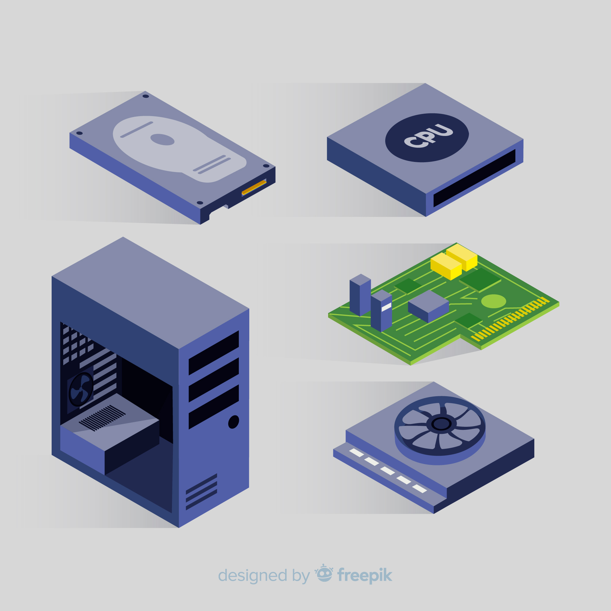

Welcome My Blog
My Blog merupakan web pribadi yang digunakan untuk membuat konten-konten tentang dunia IT
Pada kali ini kita akan membahas tentang bahasa pemrograman Java.
My Blog merupakan web pribadi yang digunakan untuk membuat konten-konten tentang dunia IT
Pada kali ini kita akan membahas tentang bahasa pemrograman Java.
Java adalah bahasa pemrograman yang dikembangkan oleh Sun Microsystems dan dirilis pertama kali pada tahun 1995. Bahasa ini dirancang untuk mudah dipelajari dan digunakan oleh banyak pengembang karena sintaksisnya yang sederhana dan sifatnya yang fleksibel. Salah satu keunggulan utama Java adalah platform-independen, yang berarti kode yang ditulis dalam Java dapat dijalankan di berbagai sistem operasi tanpa perlu diubah. Ini dimungkinkan melalui teknologi Java Virtual Machine (JVM), yang memungkinkan program Java berjalan di perangkat apapun selama mendukung JVM.
Java digunakan secara luas dalam berbagai aplikasi, mulai dari perangkat mobile, aplikasi web, hingga perangkat lunak enterprise. Bahasa ini juga dikenal dengan keamanan yang kuat dan pengelolaan memori otomatis melalui garbage collection, yang membantu mencegah kebocoran memori. Dengan komunitas yang besar dan banyaknya alat bantu serta pustaka yang tersedia, Java tetap menjadi salah satu bahasa pemrograman yang populer hingga saat ini.

Java pertama kali dikembangkan oleh James Gosling dan timnya di Sun Microsystems pada tahun 1991, dengan tujuan awal untuk menciptakan bahasa pemrograman yang mampu bekerja di berbagai perangkat elektronik, seperti televisi dan perangkat rumah tangga pintar. Pada saat itu, mereka menyadari perlunya bahasa yang portabel, artinya kode yang ditulis sekali bisa dijalankan di berbagai platform tanpa harus diubah. Proyek ini awalnya dikenal sebagai Project Green, dan bahasa yang diciptakan dinamai Oak, sebelum kemudian berubah menjadi Java.
Pada tahun 1995, Sun Microsystems merilis versi pertama Java, yaitu Java 1.0, yang menandai era baru dalam pemrograman lintas platform. Slogan "Write Once, Run Anywhere" (WORA) yang diperkenalkan bersamaan dengan peluncuran Java menjadi salah satu kekuatan utama yang mempopulerkannya. Dengan JVM yang menangani perbedaan di antara sistem operasi, pengembang tidak lagi perlu khawatir tentang kompatibilitas saat mengembangkan aplikasi. Popularitas Java meroket seiring dengan ledakan perkembangan aplikasi web di akhir 1990-an, dan penggunaannya merambah ke berbagai sektor, termasuk perbankan, telekomunikasi, dan pengembangan aplikasi mobile, terutama setelah Android menjadikannya bahasa utama. Pada tahun 2010, Oracle Corporation mengakuisisi Sun Microsystems, mengambil alih pengembangan Java. Di bawah kepemilikan Oracle, Java terus mendapatkan pembaruan dan peningkatan, termasuk penambahan fitur-fitur modern untuk mendukung pengembangan aplikasi yang lebih kompleks.
Java memiliki beberapa kelebihan yaitu
Multiplatform
Salah satu kelebihan terbesar dari Java adalah kemampuannya untuk berjalan di berbagai platform tanpa perlu mengubah kode sumbernya. Slogan Java, "Write Once, Run Anywhere," berarti bahwa aplikasi yang ditulis menggunakan Java dapat dijalankan di berbagai sistem operasi (Windows, Linux, macOS) tanpa memerlukan modifikasi kode. Hal ini dimungkinkan karena Java menggunakan Java Virtual Machine (JVM), yang bertindak sebagai perantara antara kode Java dan perangkat keras yang menjalankannya. Dengan JVM, pengembang dapat yakin bahwa aplikasi mereka dapat berfungsi di berbagai platform tanpa masalah kompatibilitas.
OOP (Object Oriented Programming - Pemrogram Berorientasi Objek)

Java dirancang sebagai bahasa yang berorientasi objek, yang berarti setiap bagian dari aplikasi dapat direpresentasikan sebagai objek. Konsep OOP memudahkan pengembang dalam hal modularitas, pemeliharaan, dan pengembangan kode yang lebih terstruktur.
Perpustakaan Kelas Yang Lengkap

Java hadir dengan Java Standard Library yang sangat lengkap, memungkinkan pengembang untuk mengakses berbagai fungsi siap pakai tanpa harus menulis ulang kode dasar. Perpustakaan ini mencakup berbagai API untuk beragam kebutuhan.
Java memiliki beberapa Kekurangan yaitu
Konsumsi Memori yang Tinggi
Java secara inheren menggunakan lebih banyak memori dibandingkan bahasa pemrograman lain, seperti C atau C++. Hal ini terutama disebabkan oleh Java Virtual Machine (JVM) yang menjadi lapisan tambahan antara kode yang dijalankan dan perangkat keras yang mendasarinya. Setiap aplikasi Java berjalan di atas JVM, yang membutuhkan lebih banyak sumber daya, termasuk memori, untuk memuat bytecode dan mengelola fungsi internal seperti garbage collection. Selain itu, mekanisme garbage collection yang otomatis dapat memicu konsumsi memori yang tinggi. Meskipun garbage collection berguna untuk mengelola memori yang tidak digunakan, proses ini juga bisa menyebabkan lonjakan penggunaan memori pada waktu-waktu tertentu, terutama pada aplikasi yang sangat besar atau kompleks. Hal ini dapat menjadi kendala pada perangkat dengan sumber daya terbatas atau untuk aplikasi yang membutuhkan efisiensi memori tinggi.
Mudah didekompilasi

Kode Java relatif mudah untuk didekompilasi. Karena Java di-compile ke dalam bytecode yang dijalankan oleh JVM, bytecode ini dapat dengan mudah diubah kembali menjadi kode sumber yang cukup mendekati aslinya menggunakan alat dekompilasi yang tersedia secara umum. Hal ini menjadi masalah terutama untuk aplikasi komersial atau perangkat lunak yang sensitif, di mana kode sumber merupakan kekayaan intelektual yang berharga. Risiko dekompilasi membuat aplikasi Java lebih rentan terhadap pencurian kode atau teknik rekayasa balik (reverse engineering). Meskipun ada teknik untuk melindungi kode Java, seperti menggunakan obfuscator untuk mempersulit proses dekompilasi, proteksi ini tidak sepenuhnya mencegah dekompilasi, hanya memperumitnya.
Java Cenderung Lebih Lambat dibandingkan dengan bahasa pemrograman seperti C atau C++
Kecepatan eksekusi Java umumnya dianggap lebih lambat jika dibandingkan dengan bahasa pemrograman seperti C atau C++. Penyebab utama dari perbedaan kecepatan ini adalah JVM yang menambahkan lapisan interpretasi tambahan antara kode Java dan perangkat keras, sehingga aplikasi tidak berjalan secara native langsung pada mesin.
Sebagai bahasa yang menggunakan Just-In-Time (JIT) compilation, Java baru akan meng-compile bagian-bagian kode selama eksekusi, yang mengarah pada waktu startup yang lebih lambat dan kinerja yang lebih rendah pada situasi tertentu. Sebaliknya, bahasa seperti C dan C++ di-compile langsung menjadi kode mesin, yang membuatnya lebih cepat dan efisien, terutama dalam aplikasi yang membutuhkan performa tinggi, seperti game atau aplikasi sistem real-time.
Sekia pembahasan pada kali ini, anda dapat menambahkan komentar atau saran untuk web ini pada bagian kolom komentar yang tersedia. Semoga bermafaat